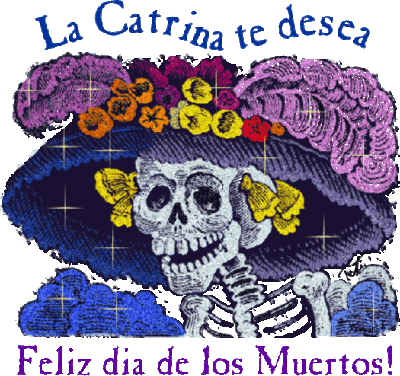
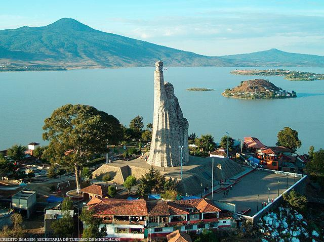

El Día de Muertos es una celebración mexicana que honra a los ancestros durante el 2 de noviembre, coincidiendo con la celebración católica del Día de los Fieles Difuntos. Aunque se ve primariamente como una festividad mexicana, también se celebra en muchas comunidades de los Estados Unidos donde existe una gran población México-americana, y en una menor medida también se celebra en algunas partes de Latinoamérica.
A pesar de ser un tema morboso, esta festividad se celebra alegremente, y aunque ocurre en fechas cercanas al Día de Todos Los Santos, y al Día de todas las Almas, en lugar de sentirse temerosos de espíritus malévolos, el humor en el día de los muertos es mucho más relajado, similar al Halloween, con un mayor énfasis en la celebración, pero honrando las vidas de los difuntos.
Los orígenes de la celebración del Día de Muertos en México, pueden ser trazados hasta la epoca de los indígenas de Mesoamérica, tales como los Aztecas, Mayas, Purepechas, Nahuas y Totonacas. Los rituales que celebran las vidas de los ancestros se realizaron por estas civilizaciones por lo menos durante los últimos 3,000 años. En la era prehispánica era común la práctica de conservar los cráneos como trofeos y mostrarlos durante los rituales que simbolizaban la muerte y el renacimiento.
El festival que se convirtió en el Día de Muertos cayó en el noveno el mes del calendario solar azteca, cerca del inicio de agosto, y era celebrado durante un mes completo. Las festividades eran presididas por el dios Mictecacihuatl, conocido como la "Dama de la muerte" (actualmente corresponde con "la Catrina"). Las festividades eran dedicadas a la celebración de los niños y las vidas de parientes fallecidos
28 de octubre Día de los accidentados
30 de octubre Día de los niños sin Bautizar.
Día de Todos los Santos (1 de Noviembre) Este día se celebra la fiesta de todos los santos que tuvieron una vida ejemplar así también de los niños difuntos
Esta fiesta es pequeña en comparación con la del Día de Muertos, dentro de las tradiciones se acostumbra realizar altares a los Santos dentro de las Iglesias, y muchas familias acostumbran realizar altares a sus niños muertos ya sea dentro de sus casas o sobre las lápidas en los cementerios. Los altares son adornados con papel de muchos colores, flores de cempasúchil, si el altar es para un niño se le ponen juguetes como carritos, muñecas, dulces etc.
Día de los Muertos (2 de Noviembre)
Este día se celebra la máxima festividad de los muertos en México. La celebración está llena de muchas costumbres. A las personas les gusta ir y llevar flores a las tumbas de sus muertos pero para otras representa todo un rito que comienzan desde la madrugada cuando muchas familias hacen altares de muertos sobre las lápidas de sus familiares muertos, estos altares tienen un gran significado ya que con ellos se cree que se ayuda a sus muertos a llevar un buen camino durante la muerte.
Son realizados según la tradición, donde se establece que el altar debe de constar de 7 niveles o escalones que representan los 7 niveles que tiene que pasar el alma de un muerto para poder descansar. Estos altares se realizan generalmente en lugares donde exista un espacio grande
Donde pueda caber todo el altar, el cual debe ser barrido el cuarto con hierbas aromáticas hacia los cuatro vientos un día antes del día de muertos. Primero se construye o fabrica el esqueleto del altar ya sea con cajas de cartón, madera o lo que se encuentre a fin de que queden bien cimentados los 7 niveles, de los cuales el séptimo debe de estar casi a la altura del suelo y sobre él se pone el segundo nivel que es un poco más chico que el primero y así sucesivamente hasta llegar al primer nivel, cada escalón es forrado con tela negra y blanca. Cada escalón tiene un significado y debe contener ciertos objetos en específico:
Primer escalón se pone la foto del santo o virgen de la devoción
Segundo escalón es para las ánimas del purgatorio.
Tercero se pone la sal para los niños del purgatorio
Cuarto se pone pan llamado "pan de muerto", este pan es adornado con azúcar roja que simula la sangre, se recomienda que el pan sea echo por los parientes del difunto, ya que es una consagración.
Quinto se pone la comida y la fruta que fueron los preferidos por el difunto.
Sexto se pone la foto del difunto a quien se dedica el altar.
Ultimo se pone la cruz de un rosario hecho de tejocote y limas. Las ofrendas que se ponen dentro del altar son las siguientes:
Se prenden cuatro velas principales formando una cruz orientada a los cuatro puntos cardinales, al lado del altar, se pone una olla de barro sobre un anafre con hierbas aromáticas: albahaca, laurel, romero, manzanilla y otras más.
Los elementos que debe tener un altar son: Cadenas de papel morado y amarillo que significan la unión entre la vida y la muerte.
Papel picado que da colorido y alegría de vivir
Las flores son la bienvenida para el alma, la flor blanca representa el cielo; flor amarilla, la tierra y la morada el luto.
Velas que con sus llamas representan la ascensión del espíritu. También significan luz, guía del camino.
Lienzo blanco y nuevo que representa la pureza, el cielo.
El cirio representa el alma sola.
Incienso de copal cuyo humo simboliza el paso de la vida a la muerte.
El maíz representa la cosecha.
Las frutas son la ofrenda que nos brinda la naturaleza. Generalmente son cañas de azúcar, naranjas, tejocotes y jícamas.
Las calaveras de azúcar que son una costumbre indígenas.
El agua que da vida y energía para el camino.
Los platillos con las que se trata de agradar el difunto compartiendo los alimentos que le gustaban.
Fotografía de la persona a quien se dedica el tributo.
Un Cristo para que haya bendiciones.
Una cruz de cal que simboliza los 4 puntos cardinales.
Sal para que el cuerpo no se corrompa.
Un camino desde la puerta de la entrada hasta el altar formado con flor de cempasúchil.
Una vara para liberar al muerto del demonio y los malos espíritus.
Objetos personales del difunto.
Las personas velan durante la noche en la tumba esperando que el espíritu de su muerto baje y disfrute de su ofrenda.
La Catrina originalmente llamada La Calavera Garbancera, es una figura creada por José Guadalupe Posada y bautizada por el muralista Diego Rivera. «Garbancera» es la palabra con que se conocía entonces a las personas que vendían garbanza que teniendo sangre indígena pretendían ser europeos, ya fueran españoles o franceses y renegaban de su propia raza, herencia y cultura.
Esto se hace notable por el hecho de que la calavera no tiene ropa sino únicamente el sombrero, desde el punto de vista de Posada, es una crítica a muchos mexicanos del pueblo que son pobres, pero que aun así quieren aparentar un estilo de vida europeo que no les corresponde.
la pintora y restauradora de arte Bertha Sandoval Romero, La Catrina fue creada por artistas mexicanos como una metáfora de la alta clase social mexicana anterior a la Revolución, es decir la de tiempos de Porfirio Díaz. Después este esqueleto ataviado de elegantes y coloridas ropas, de señora de alta sociedad vestida para dar un paseo por la antigua Alameda Central, se hizo un símbolo de la Muerte en la celebración, el 1 y 2 de noviembre, del Dìa de los Muertos.
'La Catrina' puede mostrarse de muchas formas. Algunas veces se presenta alegre, vestida con la elegancia de comienzos del siglo pasado, deseosa de divertirse e incluso coqueta y seductora con los mortales. Pero otras veces, es la 'huesuda' que en cualquier momento sólo se aparece para llevarnos de este mundo
En la ceremonia de la ofrenda a los difuntos, en el cementerio de la isla de Janitzio en el lago de Pátzcuaro, del estado de Michoacán, México , la tradición del "Día de Muertos" se ha conservado en todo su vigor.
A las 6 de la tarde del día 1° de Noviembre, de cada año, comienza a oírse el toque de muertos, y con intervalos de medio minuto la campana sigue doblando hasta la madrugada
Poco antes de la media noche las familias de la isla sales de sus casas rumbo al cementerio de la cercana ciudad de Pátzcuaro las personas se dirigen a la isla en sus canoas que semejan mariposas y que a la luz de miles de velas se antoja como un cuento. Los hombres embozados en sus sarapes, la mujeres ataviadas con sus mejores ropas y joyas más vistosas
Para iluminar el camino cada grupo prende velas, la isla adquiere un aspecto fantástico, como millares de lucecitas, masas de sombras caminantes y el lento e interminable doblar de las campanas
Los grupos se dirigen a las tumbas de sus familiares, las adornan con guirnaldas de flores, colocan ahí las bateas (charolas de madera) y los platones cargados de comida y frutas y prenden todas las velas que les sea posible
A la media noche las mujeres se arrodillan ante las tumbas, los hombre entonan fúnebres alabanzas a los muertos, de cuando en cuando las mujeres desfloran flores de cempazúchitl llevadas especialmente para ese objeto y riegan los pétalos sobre las tumbas. Así transcurren las horas hasta el amanecer
Junto al cementerio, en el atrio de la parroquia se celebra una ceremonia, en ese lugar se reúnen las familias que no tienen muertos o cuyos deudos tienen más de tres años de enterrados
No llevan ramos ni flores, solamente velas y sus bateas con ofrendas, así permanecen mudos a lo largo de toda la noche
Esta costumbre tiene su concepción desde la época prehispánica según la cual el muerto tenía que hacer un largo viaje que duraría tres años para llegar a Mictlán, lugar donde se establecería para siempre, por ese motivo consideran que al llegar el difunto al final de su viaje, ya no necesita que lo velen en el camposanto y solamente rezan por ellos en la iglesia
Huaquechula es una población ubicada al suroeste de la ciudad de Puebla, es decir en la carretera federal que va desde Atlixco a Izúcar de Matamoros.
Su nombre en náhuatl significa: “lugar del águila de plumaje precioso” y su glifo emblema lo podemos conocer por el códice mendocino. Con la llegada de los españoles el pueblo de Huaquechula adoptó la tradición religiosa católica y la incorporó con muchas de sus tradiciones prehispánicas, este pueblo realizo una enorme práctica sincretista.
En tiempos prehispánicos se tenía un complejo sistema de creencias sobre el destino de los muertos y su relación con los vivos; e incluso y gracias a la labor de etnohistoriadores podemos conocer que tenía días especiales para celebrar a los muertos dependiendo de su edad al morir o de su forma de morir.
Otro dato interesante es conocer que ya se hacían ofrendas a los muertos en las que se les ofrecía comida y otros elementos que los acompañaban en su trayecto después de la muerte.
Estas concepciones fueron re conceptualizadas con la llegada del catolicismo, permitiendo que algunos de los elementos indios se unieran con la tradición católica de todos los santos.
En Huaquechula la celebración de día de muertos de este año, comenzó desde el 28 de octubre, aunque tradicionalmente sus altares monumentales no se abran al público hasta el 31 de octubre.
Este pueblo tiene la costumbre de poner ofrendas diferentes a las que estamos acostumbrados y cada año se le ponen a las personas que fallecieron durante todo el año, en Huaquechula en noviembre del 2011 se instalaron 23 altares monumentales.
Las animas, como ahí se les llama llegan hasta las dos de la tarde que es el momento cuando al familia abre sus altares para que se puedan visitar, cabe la aclaración que el ir a Huaquechula a ver las ofrendas no significa ir a comer mole gratis.
A partir de las investigaciones de Lucero Morales, Néstor Martínez y José Ávila, podemos conocer que en Huauqechula existen tres tipos de altares: nuevo, viejo y de la “anima sola”. Este tipo de altares están considerados monumentales por su estructura ya que miden unos 3 metros de altura como otros tres metros de largo.
Cada altar debe tener tres pisos: el primero representa la vida en la tierra y por lo tanto ahí se pone la comida u objetos que le gustaban al difunto, el segundo piso es la unión de lo terrenal con lo divino, y el tercer nivel ya habla solo de lo divino en donde se coloca alguna imagen religiosa.
Todos los altares deben ser de satín blanco o plástico blanco y cuentan con pequeñas esculturas de ángeles.
Otro atractivo es que en el primer nivel se coloca la imagen del difunto mirando hacia un espejo lo que cual permite dar profundidad al diseño del altar.
Las tradición de ir a Huaquechula para día de muertos va creciendo cada año, en el 2010 llegaron casi 2000 turistas cuando normalmente solo iban unas 700 personas; el turista o el visitante debe entender que son agente externos de la celebración y que las familias ponen sus altares como parte del proceso de duelo y no como entretenimiento turístico.
Es una celebración que da identidad a México,tenemos por ejemplo a "La Catrina" en ella se refeja el buen humor
de cada méxicano frente a la muerte, nos recuerda que todo lo terrestre se acaba incluso la vida y no debemos temer por que sabemos que en estas fechas gracias a esta tradicion nos van a esperar grandes ofrendas y gozaremos de cada una. x_x